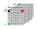
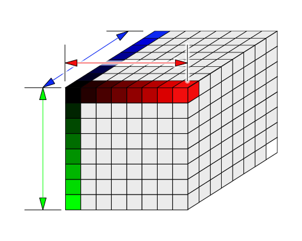
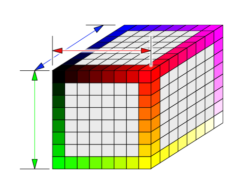
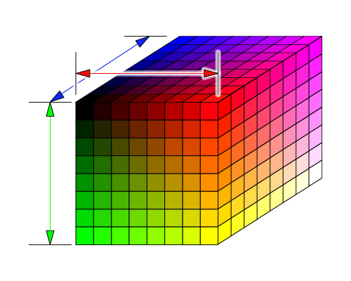
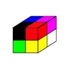
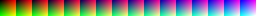
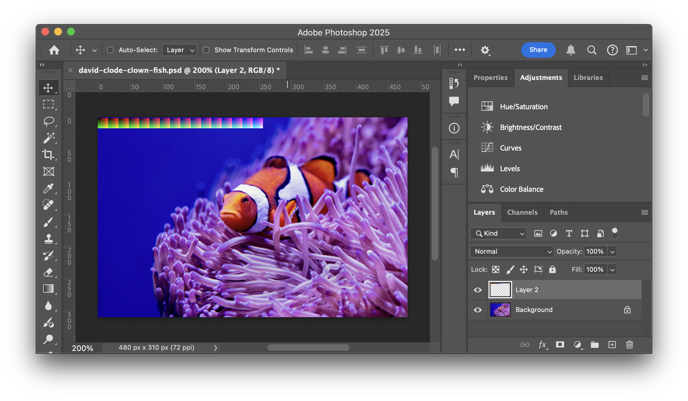
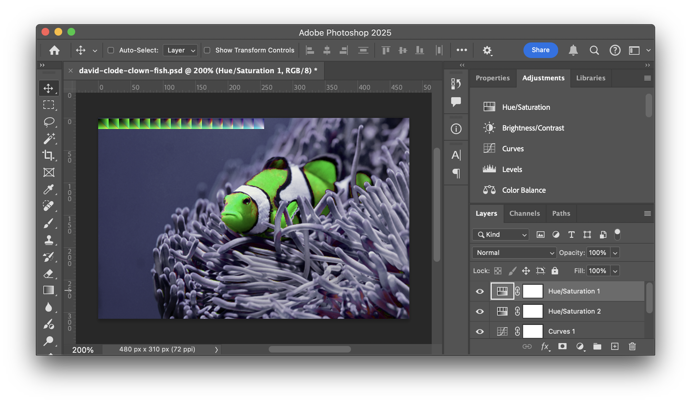

Este artículo es el tercero de una breve serie sobre ajustes de imagen. Cada uno se basa en la lección anterior, por lo que puede resultarte más fácil entenderlos leyéndolos en orden.
En el artículo anterior repasamos los mapas de degradado, que también podríamos llamar tabla de búsqueda 1D o 1D-LUT para abreviar. Nuestras 1D-LUT eran de n píxeles de ancho por 1 de alto. Una 3D-LUT es la misma idea pero en 3D.
Cómo funciona es que creamos un cubo de colores. Luego indexamos el cubo usando los colores de nuestra imagen de origen. Para cada píxel de la imagen original buscamos una posición en el cubo basada en los colores rojo, verde y azul del píxel original. El valor que extraemos de la 3D-LUT es el nuevo color.
En Javascript podríamos hacerlo así. Imagina que los colores se especifican en enteros de 0 a 255 y tenemos un gran array tridimensional de tamaño 256x256x256. Entonces, para traducir un color a través de la tabla de búsqueda haríamos esto:
const newColor = lut[origColor.red][origColor.green][origColor.bue];
Por supuesto, un array de 256x256x256 sería bastante grande, pero como señalamos en el artículo sobre texturas, las texturas se referencian desde valores de 0.0 a 1.0 independientemente de las dimensiones de la textura.
Imaginemos un cubo de 8x8x8.

Primero podríamos rellenar las esquinas: la esquina 0,0,0 es negro puro, la esquina opuesta 1,1,1 es blanco puro. 1,0,0 es rojo puro. 0,1,0 es verde puro y 0,0,1 es azul.

Añadiríamos los colores a lo largo de cada eje.

Y los colores en los bordes que usan 2 o más canales.

Y finalmente rellenamos todos los colores intermedios. Esta es una 3D-LUT de “identidad” (identity). Produce exactamente la misma salida que la entrada. Si buscas un color, obtendrás el mismo color.
Sin embargo, si cambiamos el cubo a tonos ámbar, al buscar colores, buscaremos las mismas ubicaciones en la tabla de búsqueda 3D pero producirán una salida diferente.
Usando esta técnica, al proporcionar una tabla de búsqueda diferente podemos aplicar todo tipo de efectos. Básicamente cualquier efecto que pueda calcularse basándose sólo en una única entrada de color. Esos efectos incluyen todos los que hicimos en los artículos anteriores. Ajuste de tono (hue), contraste, saturación, dominante de color (color cast), tinte (tint), brillo, exposición, niveles, curvas, posterización, sombras, iluminaciones (highlights) y muchos otros. Mejor aún, todos pueden combinarse en una única tabla de búsqueda.
Aquí está el WGSL que necesitamos. Es muy similar a la función apply1DLUT:
fn apply1DLUT(
color: vec3f,
lut: texture_2d<f32>,
smp: sampler) -> vec3f {
let l = luminance(color);
let width = f32(textureDimensions(lut, 0).x);
let range = (width - 1) / width;
let u = 0.5 / width + l * range;
return textureSample(lut, smp, vec2f(u, 0.5)).rgb;
}
+fn apply3DLUT(
+ color: vec3f,
+ lut: texture_3d<f32>,
+ smp: sampler) -> vec3f {
+ let size = vec3f(textureDimensions(lut, 0));
+ let range = (size - 1) / size;
+ let uvw = 0.5 / size + color * range;
+ return textureSample(lut, smp, uvw).rgb;
+}
Apliquémoslo a nuestros shaders. De paso, eliminemos todos los demás ajustes.
struct Uniforms {
- brightness: f32,
- contrast: f32,
lutAmount: f32,
};
@group(0) @binding(0) var postTexture2d: texture_2d<f32>;
@group(0) @binding(1) var postSampler: sampler;
@group(0) @binding(2) var<uniform> uni: Uniforms;
-@group(1) @binding(0) var lut: texture_2d<f32>;
+@group(1) @binding(0) var lut: texture_3d<f32>;
@group(1) @binding(1) var lutSampler: sampler;
@fragment fn fs2d(fsInput: VSOutput) -> @location(0) vec4f {
let color = textureSample(postTexture2d, postSampler, fsInput.texcoord);
var rgb = color.rgb;
- rgb = adjustBrightness(rgb, uni.brightness);
- rgb = adjustContrast(rgb, uni.contrast);
- rgb = mix(rgb, apply1DLUT(rgb, lut, lutSampler), uni.lutAmount);
+ rgb = mix(rgb, apply3DLUT(rgb, lut, lutSampler), uni.lutAmount);
return vec4f(rgb, color.a);
}
Para usarlo necesitaremos una textura 3D. La 3D-LUT más simple es una LUT de identidad de 2x2x2 donde identidad significa que no pasa nada. Es como multiplicar por 1 o no hacer nada; aunque estemos buscando colores en la LUT, cada color de entrada se mapea al mismo color de salida.

Aquí está el código para crear una textura 3D de 2x2x2 con los colores necesarios para una LUT de identidad.
function makeIdentityLutTexture(device) {
const texture = device.createTexture({
size: [2, 2, 2],
dimension: '3d',
format: 'rgba8unorm',
usage: GPUTextureUsage.TEXTURE_BINDING | GPUTextureUsage.COPY_DST,
});
const identityLUT = new Uint8Array([
0, 0, 0, 255, // black
255, 0, 0, 255, // red
0, 255, 0, 255, // green
255, 255, 0, 255, // yellow
0, 0, 255, 255, // blue
255, 0, 255, 255, // magenta
0, 255, 255, 255, // cyan
255, 255, 255, 255, // white
]);
device.queue.writeTexture(
{ texture },
identityLUT,
{ bytesPerRow: 8, rowsPerImage: 2 },
[2, 2, 2],
);
return texture;
}
Necesitamos algo de código para usarlo. Usémoslo dos veces, una con filtrado lineal (linear filtering) y otra sin él.
const lutNearestSampler = device.createSampler();
const lutLinearSampler = device.createSampler({
magFilter: 'linear',
minFilter: 'linear',
});
function makeLutBindGroup(texture, sampler) {
return device.createBindGroup({
layout: postProcessPipeline.getBindGroupLayout(1),
entries: [
{ binding: 0, resource: texture },
{ binding: 1, resource: sampler },
],
});
}
const identityLutTexture = makeIdentityLutTexture(device);
const lutBindGroups = [
{
name: 'identity',
bindGroup: makeLutBindGroup(identityLutTexture, lutLinearSampler),
},
{
name: 'identity (nearest)',
bindGroup: makeLutBindGroup(identityLutTexture, lutNearestSampler),
},
];
...
function postProcess(encoder, srcTexture, dstTexture) {
device.queue.writeBuffer(
postProcessUniformBuffer,
0,
new Float32Array([
- settings.brightness,
- settings.contrast,
settings.lutAmount,
]),
);
postProcessRenderPassDescriptor.colorAttachments[0].view = dstTexture.createView();
const pass = encoder.beginRenderPass(postProcessRenderPassDescriptor);
pass.setPipeline(postProcessPipeline);
pass.setBindGroup(0, postProcessBindGroup);
- pass.setBindGroup(1, lutBindGroups[settings.lut]);
+ pass.setBindGroup(1, lutBindGroups[settings.lut].bindGroup);
pass.draw(3);
pass.end();
}
const settings = {
- brightness: 0,
- contrast: 0,
lutAmount: 1,
lut: 0,
};
const gui = new GUI();
gui.onChange(render);
- gui.add(settings, 'brightness', -1, 1);
- gui.add(settings, 'contrast', -1, 10);
gui.add(settings, 'lutAmount', 0, 1);
+ const keyValues = Object.fromEntries(lutBindGroups.map(({name}, i) => [name, i]));
+ gui.add(settings, 'lut', { keyValues });
- const uiElem = document.querySelector('#ui');
- gradients.forEach((stops, i) => {
- const div = document.createElement('div');
- div.className = 'gradient';
- div.style.background = `linear-gradient(to right,
- ${stops.map(([r, g, b, stop]) => `rgb(${r}, ${g}, ${b}) ${stop * 100}%`).join(',')}
- )`;
- div.addEventListener('click', () => {
- settings.lut = i;
- render();
- });
- uiElem.append(div);
- });
Con eso obtenemos la LUT de identidad, que no tiene ningún efecto 😂, pero al menos podemos probarla sin filtrado y ver un efecto fuerte.
Primero decide la resolución de la LUT que deseas y genera los cortes (slices) del cubo de búsqueda usando un script simple.
const ctx = document.querySelector('canvas').getContext('2d');
function drawColorCubeImage(ctx, size) {
const canvas = ctx.canvas;
canvas.width = size * size;
canvas.height = size;
for (let zz = 0; zz < size; ++zz) {
for (let yy = 0; yy < size; ++yy) {
for (let xx = 0; xx < size; ++xx) {
const r = Math.floor(xx / (size - 1) * 255);
const g = Math.floor(yy / (size - 1) * 255);
const b = Math.floor(zz / (size - 1) * 255);
ctx.fillStyle = `rgb(${r},${g},${b})`;
ctx.fillRect(zz * size + xx, yy, 1, 1);
}
}
}
}
drawColorCubeImage(ctx, 8);
y necesitamos algo de HTML:
<h1>Color Cube Image Maker</h1> <div>size:<input id="size" type="number" value="8" min="2" max="64"/></div> <p><button type="button">Save...</button></p> <div id="cube"><canvas></canvas></div> <div>( nota: el tamaño real de la imagen es <span id="width"></span>x<span id="height"></span> )</div> </p>
Y al JS para crear una interfaz de usuario:
function update(size) {
drawColorCubeImage(ctx, size);
document.querySelector('#width').textContent = ctx.canvas.width;
document.querySelector('#height').textContent = ctx.canvas.height;
}
update(8);
function handleSizeChange(event) {
const elem = event.target;
elem.style.background = '';
try {
const size = parseInt(elem.value);
if (size >= 2 && size <= 64) {
update(size);
}
} catch (e) {
elem.style.background = 'red';
}
}
const sizeElem = document.querySelector('#size');
sizeElem.addEventListener('change', handleSizeChange, true);
const saveData = (function() {
const a = document.createElement('a');
document.body.appendChild(a);
a.style.display = 'none';
return function saveData(blob, fileName) {
const url = window.URL.createObjectURL(blob);
a.href = url;
a.download = fileName;
a.click();
};
}());
document.querySelector('button').addEventListener('click', () => {
ctx.canvas.toBlob((blob) => {
saveData(blob, `identity-lut-s${ctx.canvas.height}.png`);
});
});
Ahora podemos generar una tabla de búsqueda 3D de identidad para cualquier tamaño. [1]
Cuanto mayor sea la resolución, más ajustes finos podremos hacer, pero al ser un cubo de datos, el tamaño necesario crece rápidamente. Un cubo de tamaño 8 sólo requiere 2k, pero un cubo de tamaño 64 requiere 1 megabyte. Así que usa el más pequeño que reproduzca el efecto que deseas.
Establezcamos el tamaño en 16 y luego hagamos clic en guardar el archivo, lo que nos da este archivo:

Luego lo llevamos a un editor de imágenes, en mi caso Photoshop, cargamos una imagen de muestra y pegamos la 3D-LUT en la esquina superior izquierda.
nota: Primero intenté arrastrar y soltar el archivo del cubo encima de la imagen en Photoshop, pero no funcionó. Photoshop hizo la imagen el doble de grande. Supongo que estaba intentando hacer coincidir el DPI o algo así. Cargar el archivo del cubo por separado y luego copiarlo y pegarlo en la captura de pantalla funcionó.

Luego usamos cualquiera de los ajustes de imagen completa basados en color para ajustar la imagen. Para Photoshop, la mayoría de los ajustes que podemos usar están disponibles en la pestaña de Ajustes.

Después de ajustar la imagen a nuestro gusto, puedes ver que los cortes del cubo que colocamos en la esquina superior izquierda tienen aplicados los mismos ajustes.
Vale, ¿pero cómo lo usamos?
Primero lo guardé como un png 3d-lut-orange-to-green-s16.png. Para ahorrar memoria podríamos haberlo recortado a sólo la esquina superior izquierda de 256x16 de la tabla LUT, pero sólo por diversión lo recortaremos después de cargarlo. Lo bueno de usar este método es que podemos tener una idea de la efectividad de la LUT con sólo mirar el archivo .png. Lo malo es, por supuesto, el ancho de banda desperdiciado.
Aquí hay algo de código para cargarlo. El código carga la imagen, copia sólo la parte de la 3D-LUT en un canvas, obtiene los datos del canvas y los sube a la textura un corte (slice) a la vez.
/**
* crea una textura LUT a partir de la URL de una imagen. Debes pasar el tamaño de la LUT.
* Se asume que está en la esquina superior izquierda de la imagen.
*
* +---------+---------+---------+---------+---------+---------+---→
* | | | | | | |
* | layer 0 | layer 1 | layer 2 | layer 3 | ... | layer n |
* | | | | | | |
* +---------+---------+---------+---------+---------+---------+
* |
* ↓
*/
const createLUTTextureFromImage = (function() {
const ctx = new OffscreenCanvas(1, 1).getContext('2d', { willReadFrequently: true });
return async function createLUTTextureFromImage(device, url, lutSize) {
const img = new Image();
img.src = url;
await img.decode();
ctx.canvas.width = lutSize * lutSize;
ctx.canvas.height = lutSize;
ctx.drawImage(img, 0, 0);
const imgData = ctx.getImageData(0, 0, lutSize * lutSize, lutSize);
const texture = device.createTexture({
size: [lutSize, lutSize, lutSize],
dimension: '3d',
format: 'rgba8unorm',
usage: GPUTextureUsage.TEXTURE_BINDING | GPUTextureUsage.COPY_DST,
});
for (let z = 0; z < lutSize; ++z) {
device.queue.writeTexture(
{ texture, origin: [0, 0, z] },
imgData.data,
{ offset: z * lutSize * 4, bytesPerRow: imgData.width * 4 },
[lutSize, lutSize],
);
}
return texture;
};
})();
Añadamos nuestra LUT personalizada a la lista de LUT existentes.
+ const lutTextures = [
+ { name: 'custom', url: 'resources/images/lut/3d-lut-orange-to-green-s16.png'},
+ ];
+ lutBindGroups.push(...await Promise.all(lutTextures.map(async({name, url}) => {
+ // asume que el nombre del archivo termina en '-s<num>[n]'
+ // donde <num> es el tamaño del cubo 3DLUT
+ // y [n] significa 'sin filtrado' o 'nearest'
+ //
+ // ejemplos:
+ // 'foo-s16.png' = tamaño:16, filtro: true
+ // 'bar-s8n.png' = tamaño:8, filtro: false
+ const m = /-s(\d+)(n*)\.[^.]+$/.exec(url);
+ const size = parseInt(m[1]);
+ const filter = m[2] === '';
+
+ const texture = await createLUTTextureFromImage(device, url, size);
+ const sampler = filter
+ ? lutLinearSampler
+ : lutNearestSampler;
+ return {name, bindGroup: makeLutBindGroup(texture, sampler)};
+ })));
Arriba puedes ver que codificamos el tamaño de la LUT al final del nombre del archivo. Esto facilita el intercambio de LUT como archivos PNG.
Ya que estamos, carguemos un montón más de 3D-LUT basadas en imágenes:
const lutTextures = [
{ name: 'custom', url: 'resources/images/lut/3d-lut-orange-to-green-s16.png'},
+ { name: 'monochrome', url: 'resources/images/lut/monochrome-s8.png' },
+ { name: 'sepia', url: 'resources/images/lut/sepia-s8.png' },
+ { name: 'saturated', url: 'resources/images/lut/saturated-s8.png', },
+ { name: 'posterize', url: 'resources/images/lut/posterize-s8n.png', },
+ { name: 'posterize-3-rgb', url: 'resources/images/lut/posterize-3-rgb-s8n.png', },
+ { name: 'posterize-3-lab', url: 'resources/images/lut/posterize-3-lab-s8n.png', },
+ { name: 'posterize-4-lab', url: 'resources/images/lut/posterize-4-lab-s8n.png', },
+ { name: 'posterize-more', url: 'resources/images/lut/posterize-more-s8n.png', },
+ { name: 'inverse', url: 'resources/images/lut/inverse-s8.png', },
+ { name: 'color negative', url: 'resources/images/lut/color-negative-s8.png', },
+ { name: 'funky contrast', url: 'resources/images/lut/funky-contrast-s8.png', },
+ { name: 'nightvision', url: 'resources/images/lut/nightvision-s8.png', },
+ { name: 'thermal', url: 'resources/images/lut/thermal-s8.png', },
+ { name: 'b/w', url: 'resources/images/lut/black-white-s8n.png', },
+ { name: 'hue +60', url: 'resources/images/lut/hue-plus-60-s8.png', },
+ { name: 'hue +180', url: 'resources/images/lut/hue-plus-180-s8.png', },
+ { name: 'hue -60', url: 'resources/images/lut/hue-minus-60-s8.png', },
+ { name: 'red to cyan', url: 'resources/images/lut/red-to-cyan-s8.png' },
+ { name: 'blues', url: 'resources/images/lut/blues-s8.png' },
+ { name: 'infrared', url: 'resources/images/lut/infrared-s8.png' },
+ { name: 'radioactive', url: 'resources/images/lut/radioactive-s8.png' },
+ { name: 'goolgey', url: 'resources/images/lut/googley-s8.png' },
+ { name: 'bgy', url: 'resources/images/lut/bgy-s8.png' },
];
Y aquí hay un montón de LUT para probar:
Aquí están todas las LUT aplicadas a nuestra imagen:
Una última cosa, sólo por diversión: resulta que existe un formato LUT estándar definido por Adobe. Si buscas en la red puedes encontrar muchos de estos archivos LUT. Por ejemplo, este sitio tiene muchísimas LUT.
Escribí un cargador rápido. Desafortunadamente, hay 4 variaciones del formato, pero sólo pude encontrar ejemplos de 1 variación, así que no pude probar fácilmente que todas las variaciones funcionen.
Hagamos que si arrastras y sueltas un archivo LUT se aplique.
Primero necesitamos la librería:
import * as lutParser from './resources/lut-reader.js';
Luego podemos usarlos así:
- dragAndDrop.setup({msg: 'Drop Image File here'});
- dragAndDrop.onDropFile(readImageFile);
+ dragAndDrop.setup({msg: 'Drop LUT or Img File here'});
+ dragAndDrop.onDropFile(readLUTOrImgFile);
+ function ext(s) {
+ return s.substr(s.lastIndexOf('.') + 1);
+ }
+
+ function readLUTOrImgFile(file) {
+ const type = ext(file.name);
+ switch (type.toLowerCase()) {
+ case 'jpg':
+ case 'jpeg':
+ case 'png':
+ case 'webp':
+ readImageFile(file);
+ break;
+ default:
+ readLUTFile(file);
+ break;
+ }
+ }
async function readImageFile(file) {
const newImageTexture = await createTextureFromImage(device, URL.createObjectURL(file));
imageTexture.destroy();
imageTexture = newImageTexture;
updateBindGroup();
render();
}
+ function readLUTFile(file) {
+ const reader = new FileReader();
+ reader.onload = (e) => {
+ const type = ext(file.name);
+ const name = file.name.substring(file.name.lastIndexOf('/'));
+ const {size, data} = lutParser.lutTo2D3Drgba8(lutParser.parse(e.target.result, type));
+ const texture = device.createTexture({
+ size: [size, size, size],
+ dimension: '3d',
+ format: 'rgba8unorm',
+ usage: GPUTextureUsage.TEXTURE_BINDING | GPUTextureUsage.COPY_DST,
+ });
+ device.queue.writeTexture(
+ { texture },
+ data,
+ { bytesPerRow: size * 4, rowsPerImage: size },
+ [size, size, size],
+ );
+ lutBindGroups.push({
+ name: (name && name.toLowerCase().trim() !== 'untitled')
+ ? name
+ : file.name,
+ bindGroup: makeLutBindGroup(texture, lutLinearSampler),
+ });
+ settings.lut = lutBindGroups.length - 1;
+ updateGUI();
+ render();
+ };
+
+ reader.readAsText(file);
+ }
y necesitamos hacer que la GUI se actualice para incluir el nuevo archivo(s):
const gui = new GUI();
gui.name('Choose LUT or Drag&Drop LUT File(s)');
gui.onChange(render);
gui.add(settings, 'amount', 0, 1);
- const keyValues = Object.fromEntries(lutBindGroups.map(({name}, i) => [name, i]));
- gui.add(settings, 'lut', { keyValues });
+ let lutGUI;
+ function updateGUI() {
+ if (lutGUI) {
+ gui.remove(lutGUI);
+ }
+ const keyValues = Object.fromEntries(lutBindGroups.map(({name}, i) => [name, i]));
+ lutGUI = gui.add(settings, 'lut', { keyValues });
+ }
+ updateGUI();
así que deberías poder descargar una LUT de Adobe y luego arrastrarla y soltarla en el siguiente ejemplo.
Aquí hay algunas LUT que encontré en línea y apliqué a una imagen:
Ten en cuenta que las LUT de Adobe no están diseñadas para su uso en línea. Son archivos grandes (~1 megabyte). Puedes convertirlos a archivos más pequeños y guardarlos en nuestro formato PNG arrastrándolos y soltándolos en el ejemplo siguiente y haciendo clic en “Save…”. Los archivos PNG son típicamente unas 20 veces más pequeños, alrededor de 50k.
Los archivos .cube de Adobe suelen ser de 33x33x33 ↩︎